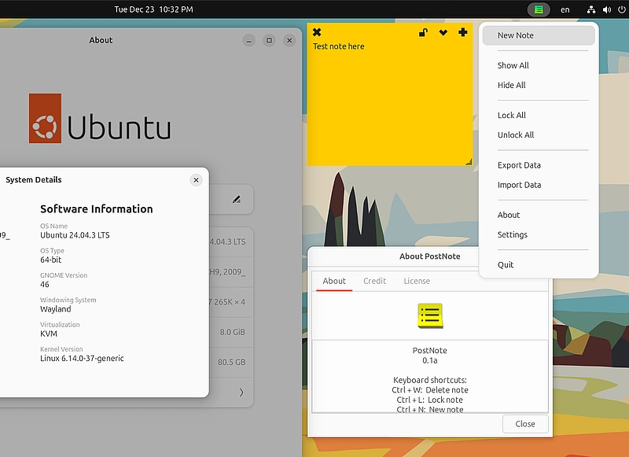

About
PostNote is a modern rewrite of the original Indicator Stickynotes Python application, written in Go for better performance and Wayland compatibility. This application provides a system tray indicator for managing multiple sticky notes on your Linux desktop.
The design, color scheme, window layout, and icons are reused from the original Indicator Stickynotes by Umang Varma. We extend our gratitude to the original author for creating this useful application.
Features
- System tray indicator for sticky notes
- Multiple notes with category support
- Customizable colors and fonts per category
- Lock/unlock notes to prevent accidental editing
- Export/import note data
- Keyboard shortcuts (Ctrl+W: Delete, Ctrl+L: Lock, Ctrl+N: New)
- Wayland window position support (with GNOME extension)
- All resources embedded in the binary for portability
Wayland Support
PostNote supports saving and restoring window positions on Wayland when using the window-calls GNOME extension.
With the extension installed:
- Window positions are automatically tracked and saved
- Notes restore to their previous positions on restart
- Position updates happen in real-time as windows are moved
Without the extension (or on X11):
- On X11: Window positions work normally using GTK methods
- On Wayland without extension: Window positions cannot be saved (Wayland security limitation)
Requirements
GNOME Extension (for Wayland)
Required for Wayland users: Install the window-calls GNOME extension to enable window position saving and restoration on Wayland.
APT Packages (Ubuntu/Debian)
BUILD
Required packages for building the application:
RUNTIME
Required packages for running the application (usually pre-installed):
Limitations
- Wayland window positioning: Requires the
window-callsGNOME extension. Without it, window positions cannot be saved on Wayland (this is a Wayland security limitation, not a bug). - Always on top: Notes cannot be set to "Always on top" - this feature is not currently supported.
- System dependencies: The AppImage uses system GTK libraries (not bundled), so GTK3 and Ayatana AppIndicator must be installed on the target system.
- Desktop environment: Currently optimized for GNOME desktop environment with AppIndicator support.
Technology
PostNote is written in Go using:
- GTK3 for the graphical user interface
- Ayatana AppIndicator for system tray integration
- CGO for C library bindings
- Go's embed package for bundling resources
This modern implementation provides better performance, smaller binary size, and improved Wayland compatibility compared to the original Python version.